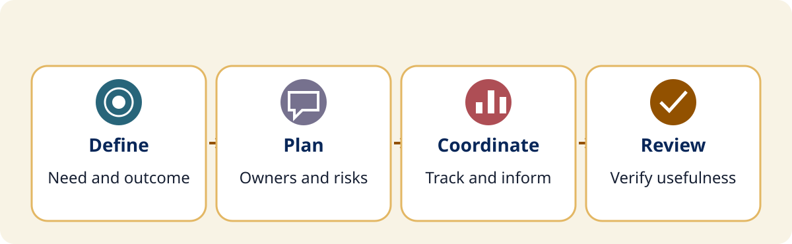
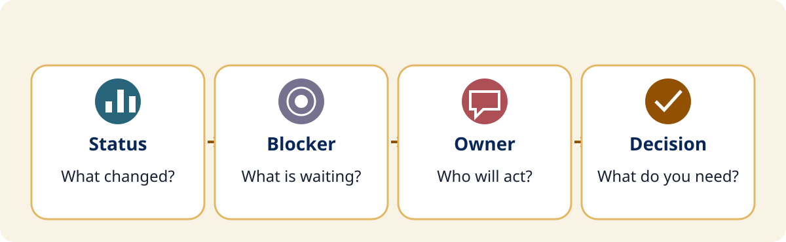
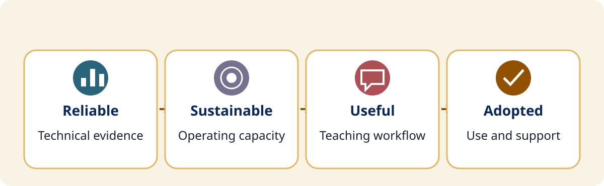

Participate
Think through a project. Talk through a decision.
Work individually, compare with a neighbor, examine a model, and revise. Stay seated; use paper or the optional browser controls.
0–5 minutes
What would you do next?
A portable classroom is still offline. Facilities and IT each say they are waiting on the other. The principal has no dependable date. What should the project lead do next?
5–13 minutes
Define the work before expanding it
Write a one-sentence problem, one in-scope outcome, and one explicit exclusion.

Model a boundary
In scope: restore and verify usable service in the portable classroom.
Out of scope: redesign every campus network.
Think and compare
Write a one-sentence problem, an outcome someone could accept, and one exclusion. Ask a neighbor which phrase needs clarification.
13–25 minutes
Make ownership and dependencies visible
Who must act before the next milestone can happen? Name the owner, a dependency, and one early warning.

Complete the handoff
Before ______ can happen, ______ must be ready.
______ owns the handoff and will provide ______.
If ______ happens, we will escalate to ______.
Draft quietly, compare with a neighbor, then revise one unclear owner or dependency. Distinguish an existing issue from a possible future risk.
25–37 minutes
Communicate progress and check the change
What update restores accountability? What evidence shows that the classroom can actually use the service?

Neighbor prompt: What does the principal need in the next update? Include status, blocker, owner, next decision, and the next check.
Consider individual change
Prosci’s ADKAR model names Awareness, Desire, Knowledge, Ability, and Reinforcement. Use questions about understanding, concerns, know-how, actual performance, and continuing support. A technical or structural barrier may need a different response from training.
Primary ADKAR reference ↗37–47 minutes
Build a small plan and test it with a neighbor
Draft the next decision, owner, dependency, update, and success evidence. Ask a neighbor to find one gap, then revise.
Spend four quiet minutes drafting. Compare with a neighbor for four minutes, then use the final two minutes to revise one gap. Use fictional or generalized details. No plans are submitted.
Your plan stays in page memory. Copy or print before leaving; reloading clears it.
47–50 minutes
Choose the next conversation
Who will you talk with, what decision will you request, and what evidence will you bring?
Name the next conversation
Who should be involved? What decision will you request? What evidence will you bring? When will you review the result?
Return to the success criteria and choose one manageable next step. Keep your own copy of the plan.
Get the planning toolkit